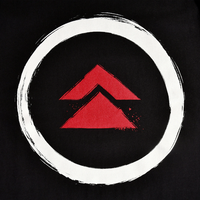
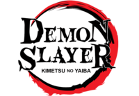
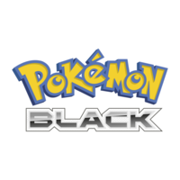
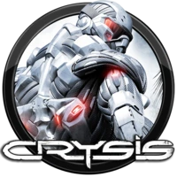

Presentation de moi
Bonjour à tous, je me nomme Zitzitoune sur les réseaux, mais je
m'appelle Chouaib IRL, je suis lycéen en filière technologique en STI2D et
j'ai aujourd'hui 17 ans, mon premier stream a été le 06 mars 2026 sur GTA 5 Online
avec mes potes, et c'est même eux qui m'ont conseillé de commencer à stream et
faire des petits clips sur les réseaux, je ne regrette pas ce choix, j'ai pu passer des beaux
moments, même si c'est loin d'être fini xD. À l'heure actuelle, j'ai cumulé 48 followers grâce au nombre de lives que j'ai produits
mais aussi car j'ai eu un entourage qui m'a soutenu, merci beaucoup à eux, je leur fais une grosse dédicace <3
Mon premier objectif, comme tout streamer, c'est de débloquer le statut de streamer affilié,
j'ai pas l'intention de prendre des initiatives pour ça, mais inshaAllah je l'aurai
Le mec dans ma pp, c'est Ulquiorra, c'est un perso dans Bleach qui est calme et que je trouve stylé
J'aime beaucoup les animes, c'est une belle chose que j'ai découverte dans ma vie, à mon prime
j'enchaînais 30/jour à la période où je regardais One Piece, et repenser à cette période me rend un
peu nostalgique, actuellement, je pense avoir regardé une bonne vingtaine d'animes, malgré que je suis
ouvert d'esprit, il y en a deux qui m'ont pas plu : Baki et Solo Leveling, ces deux animes ont été une
perte de temps pour moi, mais bon, c'est comme ça. En termes de jeux vidéo, je joue plus à Brawlhalla et
j'ai peak les 1700 Elo, mais si j'ai l'occasion, je joue à des jeux d'horreur s'il y a un viewer.
Mes fruits préférés sont : les raisins, les pommes (lorsqu'elles sont dures) et les clémentines.
Pour finir ma présentation, faisons des top 5 :
| TOP5 | anime(sans le big 3) | jeux solo |
|---|---|---|
1 |
||
2 |
 |
|
3 |
||
4 |
 |
 |
5 |
 |